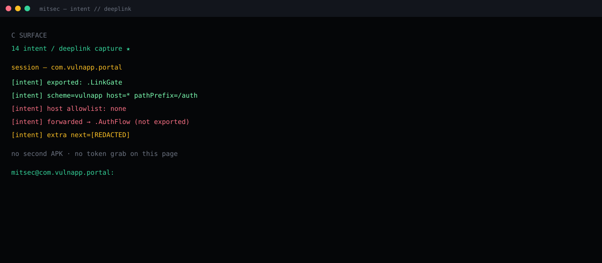

An exported handler accepted any host on the app scheme and forwarded into login.
Module 14 on an authorized lab build. Manifest filter plus the runtime Intent.
pathPrefix /auth. Host unchecked. Extra next reached .AuthFlow.
Allowlist host and path. Drop substring checks. Do not start auth from raw extras.
Summary
Lab package com.vulnapp.portal exported .LinkGate on vulnapp:// with a path prefix of /auth and no host allowlist. The activity did a substring test on the URI, then started .AuthFlow — a component that is not exported — and handed it the original extras.
That is the finding. A second package on the device can aim an intent at the gate and land inside the login sequence with fields the gate did not normalize. Class: CWE-284 on an exported deeplink. Account takeover is a chain, not this page.
Lab frame

What AndroScope printed
[intent] exported: .LinkGate [intent] scheme=vulnapp host=* pathPrefix=/auth [intent] host allowlist: none [intent] forwarded → .AuthFlow (not exported) [intent] extra next=[REDACTED] no second APK · no token grab mitsec@com.vulnapp.portal:
Why the two checks fail together
The manifest filter is not a security boundary. It is a router. host="*" plus a path prefix means any sender that can fire an implicit intent can reach the gate.
The Java side used a substring on the URI string. Substring is not an allowlist. A host, a path segment, or a query value can still contain the token the check was looking for and carry extra data the auth activity will read.
.AuthFlow being non-exported does not help once the exported gate starts it with attacker-shaped extras. The private activity trusts its caller. The caller is now the gate.
Impact (class)
Control of where the login sequence begins and which next / redirect / token-shaped extra it consumes. On its own: unexpected navigation. Chained with a weak token handler or an open redirect inside that flow: session issues. This page stops at the injection into the flow.
Fix
- Verified App Links for anything that must be public. Custom schemes are not proof of origin.
- Exact host and path allowlist in code, not a substring.
- Do not forward raw extras into an auth activity. Parse, type-check, drop the rest.
- If the gate only exists to open login, it should not take a caller-controlled destination.